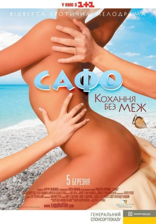

#10768 Sommerliebe
Alternativ: Summer Lover (Englischer Titel)
 
 IMDB-Wertung: 4.8 / 10
IMDB-Wertung: 4.8 / 10  Metascore: 0
Metascore: 0 
In den 1920er Jahren: Die hübsche Millionärstochter Sappho Lovell und ihr Ehemann Phil verbringen ihre Flitterwochen auf der griechischen Insel Lesbos. Dort trifft Sappho auf Helene, die Tochter eines russischen Archäologen. Hals über Kopf verlieben sich die beiden Frauen ineinander. Eine moderne, provokative Version der Geschichte der griechischen Poetin und Schriftstellerin Sappho, die mit ihren erotischen Liebesgedichten dem Namen der Insel Lesbos zu lange währendem Ruhm verholfen hat.
Jahr: 2008
Dauer: 88 Minuten
FSK: 16
Land: Ukraine Studio: Lighthouse Home EntertainmentTonspuren: DTS - ,
Untertitel:
Auflösung: 1080p (1920x1080) Größe: 8058 MB
Genre: Drama, Liebe
Regisseur: Robert Crombie
Drehbuch: Robert Crombie
Soundtrack: Maro Theodorakis
Darsteller:
- Bogdan Stupka als Professor Orlov
- Alexander Leontaritis als Voice over (uncredited)
- Avalon Barrie als Sappho Lovell
- Todd Soley als Phil Lovell
- Lyudmila Shiryaeva als Helene Orlov
- Elissaios Vlachos als Dionisios
- Vassilis Psychogiopoulos als Barber
- Oksana Osipova als Maria
- Sergey Kosenko als Christos
- Anatoliy Semenov als Tattoo-Artist
- Bakhtiyar Aliev als Island Resident
- Seit-Khalil Ametov als Island Resident
- Vasily Andrus als Island Resident
- Diana Asonova als Island Resident
Datei: X:\2008(N-Z)\Sommerliebe (2008, FSK16, 1920x1080).mkv seit 22.02.2019
Festplatte: HD 2008(G-Z)-2009(A-F)
 Es gibt insgesamt 91 Filme in der Gruppe '2008(N-Z)'
Es gibt insgesamt 91 Filme in der Gruppe '2008(N-Z)'